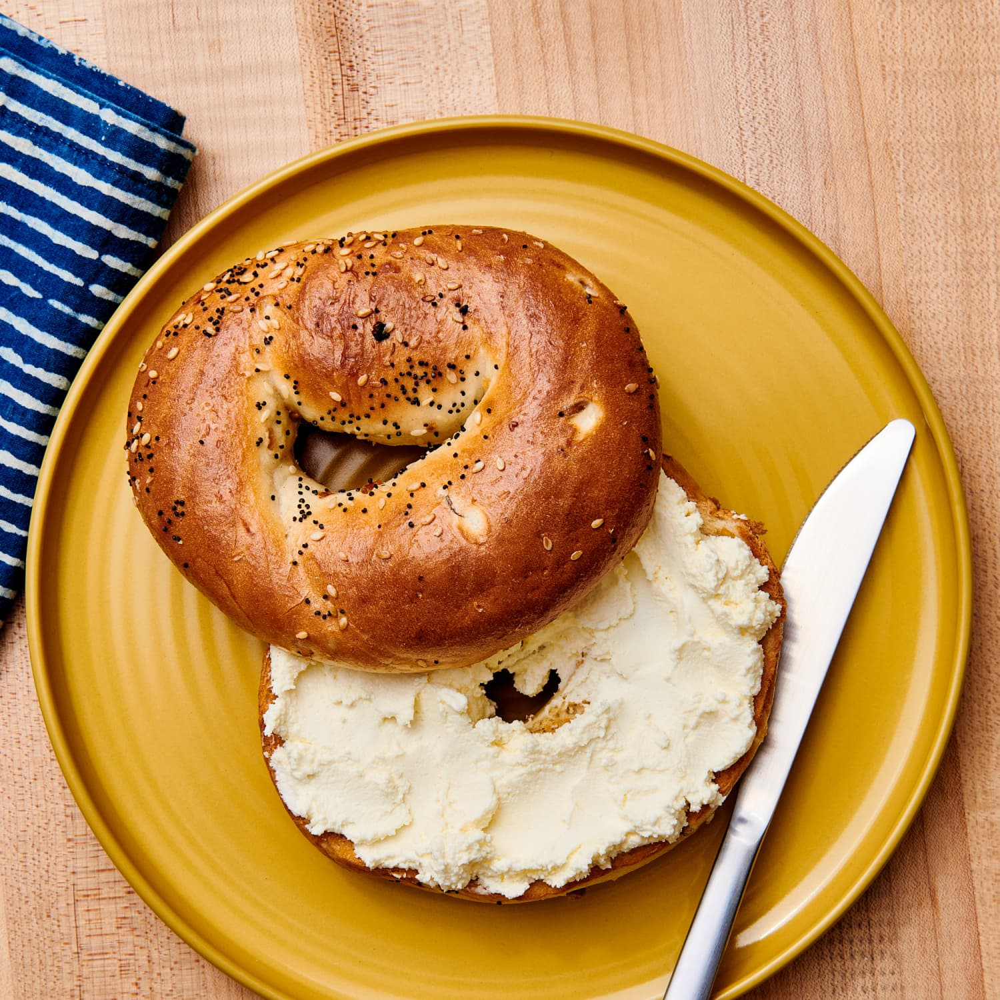

Bagel & Cream Cheese

The breakfast item of champions. Pair with scrambled eggs to be unstoppable.
Hardier than a donut. Softer than a rock. It's the bagel. Who doesn't like a bagel?
Bagels are a versatile bread item. Breakfast sandwich, pizza alternative, vessel for spread, it can do it all.
Ingredients
- Get yourself a bagel. Could be an onion, everything, or multi-grain.
I like plain because I'm boring and scared of change.
- Get yourself a cream cheese. Could be chives, strawberry, or roasted red pepper.
I like plain because I'm boring and I don't like change.
Steps
- Cut the bagel in half. You should end up with two "O" shaped pieces.
If you ended up with two "C"-shaped pieces, immediately consume them and start again.
- Toast the two halves to your liking.
- Spread your chosen cream cheese across the surface area of the halves that were exposed by the original cut (ie not the outer crust).
- Serve on a plate! Repeat until you've eaten 12.